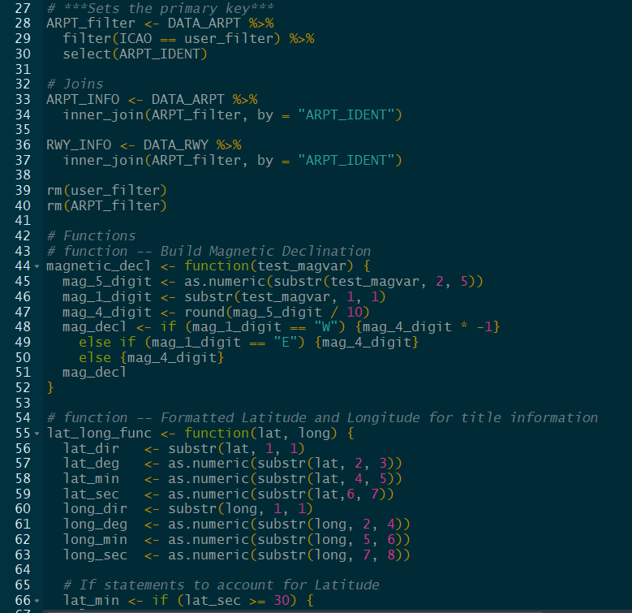

Data Engineering
If you're familiar with working with data, the data environment normally fall into one of two categories: either a chaotic mess filled with erroneous information that is incredibly difficult to navigate through, or massive amounts of information that take time to map the endless relationships. This project falls more into the latter category, as we used a government database with a clear maintenance plan and feedback loop. However, we had to create a logical, formulaic approach to make sure we were extracting only the data that was absolutely necessary, and no more - otherwise, the sheer volume of information would overwhelm our approach. We started by using a workflow tool, in this case Alteryx. Alteryx does an excellent job of allowing you to quickly join to databases, extract, blend, transform, mutate and perform calculations, and is our preferred tool at the start of any data project. Alteryx is our preferred tool in connecting with and understanding our data - while it has great tools for prediction modeling, machine learning and optimization, we didn't use any in this case. We did our basic and advanced certification in Alteryx, so if you have specific questions about our process, please contact us. Here is a segment of our workflow, where we extract data from several different places and molded it into a format that we could work with.

To give you a more detailed view of one segment of the workflow, in the image below we completed twenty different data transformation steps to take unformatted communication data and create a hierarchy of frequencies based on what information is available and which communication frequencies take precendence. Starting from the left, We filter data based on the airfield, determine what type of frequency it is (based on the spectrum), remove any frequencies that would not be needed based on the approach procedure, rename the frequency types to create a hierarchy, remove bad or unused frequencies, group them by type and use logic to extract the frequencies needed. We then convert this into a standard numerical array, so the object oriented programming in the next step can plot this information based on their own logic.

Alteryx is an excellent tool to build an automated data transformation workflow, but to provide a low-cost solution that would accomodate many users and give full control to the data engineers and mappers, we transitioned to the well-established, open-source statistical modeling programming language 'R'. 'R' is the preferred tool of data scientists and engineers, with robust capabilities in everything from data transformation to machine learning and prediction modeling. While Alteryx provides ease of use and a visual understanding of the process very rapidly, 'R''s scalability was the natural choice when having to build an automation tool that numerous people would be using in a limited manner. Our solution built an interface for ease of use, while the scripts themselves form the backbone of the data platform. If you're familiar with 'R', we put a heavy reliance on the 'Tidyvere' methodology, and use the 'sf', 'Raster' and 'spData' packages to build geospatial buffers that pull in the relevant navigational aids based on their latitude and longitude. We ensured that everything we did within 'R' was commented and documented, to ensure that anyone on our team could pickup and interact with the code. Here's a snippet, the entire sequence included about 1000 lines of code. Again, if you have any specific questions about the process or 'R', please contact us.
